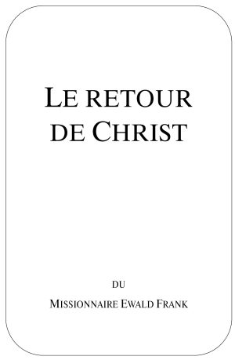

|
 |
|
Titre
original de louvrage: Auteur: Traduit de lallemand. Tout droit de reproduction,même partiel, est réservé. Editeur |
|
|
TABLE DES MATIERES |
LE RETOUR DE CHRIST
Ses différentes venues et les événements qui lui sont liés
Un exposé du point de vue biblique du missionnaire Ewald Frank
AVANT-PROPOS
Si je me suis décidé à écrire ce traité, cest pour que beaucoup de croyants puissent avoir une meilleure compréhension de ce sujet difficile mais combien important du retour du Seigneur.
Je suis conscient que certains points nont pu être quesquissés, et par conséquent nont pu être exposés dune façon détaillée. Pour présenter un plus ample exposé, plusieurs volumes ny auraient pas suffi. Les quelque deux cents citations bibliques, et même davantage, qui ont été utilisées ici devraient permettre au lecteur de continuer à sonder personnellement les Ecritures afin de voir si les choses étaient ainsi (Act. 17.11).
Deux faits mont constamment rempli de reconnaissance en écrivant cela: le premier est que le Seigneur, par grâce, mait accordé une vision si profonde de Son plan de salut; la seconde est que je ne sois soumis à aucune orientation de foi particulière, de telle manière que je puisse exposer fidèlement les vérités pures et non falsifiées de la Parole de Dieu dans leur contexte exact.
Prenant en considération le fait que Dieu, dans Sa grâce, mait accordé de jeter un regard dans Ses pensées et Ses plans puissants à légard de lhumanité, je ne puis que mécrier avec le psalmiste David: Car tu as exalté ta parole au-dessus de tout ton nom! (Ps. 138.2). Je mécrie aussi avec lapôtre Paul: O profondeur des richesses et de la sagesse et de la connaissance de Dieu! (Rom. 11.33). Irénée, ce grand homme de Dieu du temps suivant lâge apostolique, disait: A ceux qui Lui étaient agréables, Dieu montrait, Lui larchitecte le plan de la rédemption. Un poète auteur de cantiques a écrit: Fais silence en moi, Seigneur, cest là ma supplication; fais silence, pour que je voie les merveilles de Ta Parole!. Ce qui demeure caché aux sages et aux intelligents est révélé par lEsprit de Dieu à ceux qui croient en Lui avec une foi denfant.
Cest dans cette pensée que je souhaite sincèrement à tous les lecteurs les bénédictions de Dieu, de même quun approfondissement spirituel bienfaisant dans la merveilleuse Parole de Dieu. Puisse chacun se laisser conduire par le Saint-Esprit dans les richesses insondables de Sa Parole révélée.
Que Dieu bénisse Sa Parole bénie en faveur de tous les bénis de Dieu.
Krefeld, novembre/décembre 1988
Lauteur
LE RETOUR DE CHRIST
Ses différentes
venues
et les événements qui lui sont liés
Comme pour tous les thèmes bibliques, nous trouvons dans les Saintes Ecritures beaucoup de déclarations en rapport avec des événements divers, qui doivent être assemblés de la manière juste. En fait il y a plusieurs venues mais un seul retour, à loccasion duquel lEpoux divin rencontrera Son Epouse terrestre dans les airs (1 Thess. 4.13-18) pour La conduire au Repas des Noces (Apoc. 19.1-10). Il a fait cette promesse: Et si je men vais et que je vous prépare une place, je reviendrai, et je vous prendrai auprès de moi; afin que là où moi je suis, vous, vous soyez aussi (Jean 14.3).
Dans ce quon appelle la Confession des Apôtres, dont sans aucun doute les apôtres ne savaient rien parce que cest seulement au 4ème siècle après Christ quelle a été définitivement formulée, le retour de Christ nest même pas mentionné. Il nest rien dit dun enlèvement, cest-à-dire dun enlèvement de croyants qui est le plus grand événement à la fin du temps de la grâce. Dans cette Confession des Apôtres il est seulement dit: duquel Il va revenir pour juger les vivants et les morts. Le jugement final, qui est aussi connu sous le nom de jugement dernier, a lieu cependant bien plus tard, cest-à-dire après le règne de mille ans (Apoc. 20.11-15).
Les erreurs doctrinales à légard de ce thème, qui se sont infiltrées au cours des premiers siècles après Christ dans la prédication biblique, se trouvent aujourdhui encore dans les églises officielles ou indépendantes sous la même forme ou sous une forme modifiée. Augustin (354-430), qui est considéré par beaucoup dhistoriens comme lun des plus grands pères de lEglise, interpréta dune manière spirituelle la nouvelle naissance, disant quelle était la première résurrection. Cependant Paul, quil honorait, plaçait la résurrection dentre les morts comme le but à atteindre le plus élevé (Phil. 3.10,11). Pour Augustin, Satan était déjà lié, et il voyait lEglise comme étant le Royaume de mille ans, lunion de la puissance de lEtat et de lEglise constituant lEtat de Dieu.
Nous ne voulons pas considérer toutes les thèses et antithèses humaines qui ont été apportées au cours de lhistoire de lEglise, mais exposer le point de vue biblique. Bien que dans les Saintes Ecritures pas une seule prédication tenue par un apôtre nait exposé le retour de Christ ou les diverses venues du Seigneur de A à Z, nous trouvons cependant de très claires indications à ce sujet. Sur tous ces événements, les croyants de lEglise primitive avaient le privilège davoir entendu de leurs propres oreilles beaucoup de prédications, sorties de bouches que Dieu avait appelées à les prononcer. Comme Paul en rend lui-même témoignage, il avait publié tout le conseil de Dieu (Act. 20.27). Visiblement, dans leurs lettres aux Eglises, les apôtres présumaient que toutes ces choses étaient connues car la plupart dentre eux sexpriment brièvement à leur sujet. Pour avoir une vue densemble, il est nécessaire de trouver les passages très disséminés, comme pour les prophéties, et de les placer dans lordre juste.
Depuis lévangile de Matthieu jusquà la fin de lApocalypse, nous trouvons sans cesse dans le Nouveau Testament quil est question de la venue du Seigneur, cest-à-dire de Son retour. Mais il ne sagit pas chaque fois de la même venue, pas plus que les passages isolés ne se trouvent dans lordre chronologique.
Deux passages qui paraissent semblables et qui cependant décrivent deux événements totalement différents illustrent clairement combien il est important de comprendre réellement le texte que lon lit. Dans Matthieu 25.1-10 il est question de personnes qui, lors de la venue de lEpoux, sont prêtes à aller avec Lui au Repas des Noces. Dans Luc 12.35-40, par contre, il sagit de personnes qui attendent leur Seigneur lorsquIl reviendra du Repas des Noces. Entre ces deux événements sétend une période de plusieurs années, et ces événements se rapportent à deux groupes complètement différents, bien que dans les deux cas les mêmes mots soient utilisés, comme: Repas des Noces, lampes, être prêt, etc.
A chaque venue du Seigneur sont rattachés différents événements. Que lon pense seulement aux plus de cent prophéties de lAncien Testament qui se sont accomplies lors de la première venue de Christ. En ce qui concerne lEglise du Nouveau Testament, il y a pour Elle trois venues: la première fois, le Seigneur est venu pour racheter les Siens; la deuxième fois, il sagit de la promesse de Son retour pour chercher les Siens et les conduire à la maison quIl a préparée; finalement Il viendra avec les Siens (Apoc. 19.11-16) pour régler les comptes avec les puissances ennemies de Dieu et établir Son royaume qui durera mille ans (Apoc. 20).
Nous nous occuperons principalement dans ce traité du retour de Christ et de lenlèvement de la communauté qui Lui appartient; événements que tous les croyants attendent dun coeur ardent depuis Son ascension. Le Seigneur Lui-même a bien dit: Et si je men vais et que je vous prépare une place, je reviendrai, et je vous prendrai auprès de moi; afin que là où moi je suis, vous, vous soyez aussi (Jean 14.3).
Dans Matthieu 24, lorsque les disciples montrèrent au Seigneur et Maître la beauté du Temple, ils furent certainement très étonnés de Lentendre leur répondre: Ne voyez-vous pas toutes ces choses? En vérité, je vous dis: il ne sera point laissé ici pierre sur pierre qui ne soit jetée à bas (v. 2).
Cest après cette parole quils Lui posèrent trois questions:
1° Dis-nous quand ces choses auront lieu?;
2° et quel sera le signe de ta venue?;
3° et de la consommation du siècle?.
Celui qui lit ce chapitre avec attention constatera que Jésus donna à ces trois questions la réponse correspondante. A légard de Sa venue, Il dit: Car comme léclair sort de lorient et apparaît jusquà loccident, ainsi sera la venue du fils de lhomme (Mat. 24.27).A dautres endroits des Ecritures, Il se référa aussi à cela: Mais comme ont été les jours de Noé, ainsi sera aussi la venue du fils de lhomme (Mat. 24.37).
et ils ne connurent rien, jusquà ce que le déluge vint et les emporta tous, ainsi sera aussi la venue du fils de lhomme (Mat. 24.39).
Veillez donc; car vous ne savez pas à quelle heure votre Seigneur vient (Mat. 24.42).
Cest pourquoi, vous aussi, soyez prêts; car, à lheure que vous ne pensez pas, le fils de lhomme vient (Mat. 24.44).
Or, comme elles sen allaient pour en acheter, lépoux vint; et celles qui étaient prêtes entrèrent avec lui aux noces (Mat. 25.10).
Veillez donc, priant en tout temps, afin que vous soyez estimés dignes déchapper à toutes ces choses qui doivent arriver, et de vous tenir devant le fils de lhomme (Luc 21.36).
Dans le christianisme primitif, cette espérance était constamment vivante dans le coeur des croyants. Ceci ressort clairement de beaucoup de passages bibliques où il est question de cela:
en sorte que viennent des temps de rafraîchissement de devant la face du Seigneur, et quil envoie Jésus Christ, qui vous a été préordonné (Act. 3.19,20).
Car toutes les fois que vous mangez ce pain et que vous buvez la coupe, vous annoncez la mort du Seigneur jusquà ce quil vienne (1 Cor. 11.26).
et comment vous vous êtes tournés des idoles vers Dieu, pour servir le Dieu vivant et vrai, et pour attendre des cieux son Fils quil a ressuscité dentre les morts, Jésus, qui nous délivre de la colère qui vient (1 Thess. 1.9,10).
Car quelle est notre espérance, ou notre joie, ou la couronne dont nous nous glorifions? Nest-ce pas bien vous devant notre Seigneur Jésus, à sa venue? (1 Thess. 2.19).
Car le Seigneur lui-même, avec un cri de commandement, avec une voix darchange, et avec la trompette de Dieu, descendra du ciel (1 Thess. 4.16).
Or le Dieu de paix lui-même vous sanctifie entièrement; et que votre esprit, et votre âme, et votre corps tout entiers, soient conservés sans reproche en la venue de notre Seigneur Jésus Christ (1 Thess. 5.23).
Or nous vous prions, frères, par la venue de notre Seigneur Jésus Christ et par notre rassemblement auprès de lui (2 Thess. 2.1).
que tu gardes ce commandement, sans tache, irrépréhensible, jusquà lapparition de notre Seigneur Jésus Christ, laquelle le bienheureux et seul souverain, le Roi de ceux qui règnent et le Seigneur de ceux qui dominent, montrera au temps propre (1 Tim. 6.14,15).
désormais mest réservée la couronne de justice, que le Seigneur juste juge me donnera dans ce jour-là, et non seulement à moi, mais aussi à tous ceux qui aiment son apparition (2 Tim. 4.8).
Car encore très peu de temps, et celui qui vient viendra, et il ne tardera pas (Héb. 10.37).
Usez donc de patience, frères, jusquà la venue du Seigneur affermissez vos coeurs, car la venue du Seigneur est proche (Jacq. 5.7,8).
Car ce nest pas en suivant des fables ingénieusement imaginées, que nous vous avons fait connaître la puissance et la venue de notre Seigneur Jésus Christ (2 Pier. 1.16).
sachant tout dabord ceci, quaux derniers jours des moqueurs viendront, marchant dans la moquerie selon leurs propres convoitises et disant: Où est la promesse de sa venue? (2 Pier. 3.3,4).
Bien-aimés, nous sommes maintenant enfants de Dieu, et ce que nous serons na pas encore été manifesté; et nous savons que quand il sera manifesté, nous lui serons semblables, car nous le verrons comme il est (1 Jean 3.2).
de même aussi dans le Christ tous seront rendus vivants; mais chacun dans son propre rang: les prémices, Christ; puis ceux qui sont du Christ, à sa venue (1 Cor. 15.22,23).
CELA SACCOMPLIRA REELLEMENT
Le plus grand nombre des passages bibliques que nous avons présentés nous montrent limportance de lévénement. Malheureusement, très tôt après la mort des apôtres, on commença à interpréter le retour de Jésus-Christ dans le sens spirituel, et cela continua jusquà nos jours. Les hommes meurent, mais malheureusement pas les esprits: ils semparent dautres hommes et continuent de répandre les fausses doctrines. On connaît généralement la théorie dune organisation prétendant que le Royaume de Dieu aurait commencé sur la terre depuis 1914 et quil y serait édifié. De semblables doctrines, en relation avec un moment donné que lon avait déterminé, étaient déjà apparues avant celle-ci et il y en a maintenant encore. Aujourdhui, par exemple, elles sont répandues sous la formule de Parousie de Christ. Les défenseurs de cette doctrine prétendent que Christ serait déjà venu et quIl serait actuellement présent comme Juge. Une fois de plus la venue de Christ est spiritualisée et déclarée être une certaine révélation, laquelle serait accordée à un groupe bien déterminé. Chaque fois on a avancé les mêmes prétentions. Cest avec un grand enthousiasme que lon prêche cela, et les gens ne remarquent pas quils ont à proprement parler dévié de la Vérité et que la bienheureuse espérance leur a été ainsi dérobée.
Aussi pieuses que puissent paraître de telles formulations, tout aussi fausses sont-elles et conduisent-elles à légarement. Le mot grec Parousie signifie présence, mais il indique toujours une venue personnelle. Paraousia signifie substance présente. Quand par exemple le président des Etats-Unis entre dans la Maison-Blanche, cest alors une parousie. La parousie nest pas une fantaisie; ce terme ne peut être employé que lors de la venue corporelle, réelle et visible dune personne. Il ne peut y avoir de parousie de Christ sans quIl apparaisse personnellement et corporellement. Tout simplement, une telle doctrine est une absurdité. Aussi vrai que Sa présence-parousie était réelle lors de Sa première venue-épiphanie, tout aussi vrai sera-t-Il personnellement et corporellement réel lors de Sa présence-parousie à Son retour. Une doctrine de la parousie de Christ sans quIl apparaisse vraiment personnellement, sans quIl soit présent, est dénuée de tout fondement biblique sensé.
De même que le retour de Jésus-Christ Lui-même nest pas une présomption ou une doctrine mais bien une réalité, ainsi les événements qui y sont rattachés sont également une réalité. Paul écrit: Voici, je vous dis un mystère: Nous ne nous endormirons pas tous, mais nous serons tous changés (1 Cor. 15.51). Nous pouvons lire dans Matthieu 17.2 comment se fera cette transmutation: Et il fut transfiguré devant eux; et son visage resplendit comme le soleil, et ses vêtements devinrent blancs comme la lumière. Cest ainsi également que Jean Le vit sur lîle de Patmos: Sa tête et ses cheveux étaient blancs comme de la laine blanche, comme de la neige; et ses yeux comme une flamme de feu (Apoc. 1.14).
Cette transmutation inclut le fait que ce corruptible revête lincorruptibilité, et que ce mortel revête limmortalité (1 Cor. 15.53). Lachèvement du Corps de Christ inclut labsolue perfection, dans laquelle il ny a plus de vieillesse mais au contraire une jeunesse éternelle. Dans Job 33.23-28 nous trouvons décrit le retour au jeune âge. Dans ce passage de lEcriture il est question de lIntercesseur et de lExpiation. Cest après cela que ceux qui ont été réconciliés avec Dieu nous sont montrés dans leur condition de glorification, cest-à-dire dans la fleur de leur jeunesse: Alors sa chair aura plus de fraîcheur que dans lenfance; il reviendra aux jours de sa jeunesse (Job 33.25). Cet événement saccomplira en un instant, en un clin doeil, à la dernière trompette, car la trompette sonnera et les morts seront ressuscités incorruptibles, et nous, nous serons changés (1 Cor. 15.52).
Le changement (transmutation) ne sopère pas seulement en ceux qui sont à ce moment-là vivants dans la foi en Christ, mais aussi en tous ceux qui se sont endormis dans cette espérance vivante. Job exprime sa foi en la résurrection par ces paroles: Mais je sais que mon rédempteur est vivant, et quil se lèvera le dernier sur la terre. Quand ma peau sera détruite, il se lèvera; après que ma peau aura été détruite, moi-même je contemplerai Dieu. Je le verrai, et il me sera favorable; mes yeux le verront, et non ceux dun autre (Job 19.25-27 Segond).
Lors du retour du Seigneur, ceux qui se sont endormis en Christ reçoivent un corps de résurrection, comme il est écrit dans 1 Corinthiens 15.42-44: Ainsi aussi est la résurrection des morts: il est semé en corruption, il ressuscite en incorruptibilité; il est semé en déshonneur, il ressuscite en gloire; il est semé en faiblesse, il ressuscite en puissance; il est semé corps animal, il ressuscite corps spirituel.
Car si nous croyons que Jésus mourut, et quil est ressuscité, de même aussi, avec lui, Dieu amènera ceux qui se sont endormis par Jésus (1 Thess. 4.14). Celui qui enseigne que Christ serait déjà revenu doit aussi nous dire où se trouvent ceux qui se sont endormis en Christ et quIl a amenés avec Lui. Ceux qui disent ces choses favorisent les vivants par rapport à ceux qui se sont endormis, et ils contredisent les claires déclarations des Saintes Ecritures: Car nous vous disons ceci par la parole du Seigneur: que nous, les vivants, qui demeurons jusquà la venue du Seigneur, nous ne devancerons aucunement ceux qui se sont endormis. Car le Seigneur lui-même, avec un cri de commandement, avec une voix darchange, et avec la trompette de Dieu, descendra du ciel et les morts en Christ ressusciteront premièrement; puis nous, les vivants qui demeurons, nous serons ravis ensemble avec eux dans les nuées à la rencontre du Seigneur, en lair (1 Thess. 4.15-17).
Il ressort de ce passage que le Seigneur ne descend pas jusque sur la terre, mais quau contraire, ce sont les vainqueurs, cest-à-dire ceux qui se sont endormis en Christ et ceux qui vivent en Christ, qui sen vont ensemble dans leur condition de ressuscités pour Le rencontrer dans les airs. et ainsi nous serons toujours avec le Seigneur (1 Thess. 4.17).
Comme le Seigneur la promis, Il est présent en Esprit avec les Siens, et cela pendant tout le temps de la grâce. Il est présent partout où deux ou trois sont réellement assemblés en Son Nom. Le jour de Pentecôte, Il est descendu et depuis lors Il a fait des croyants Sa demeure (Jean 14.18). et nous a ressuscités ensemble, et nous a fait asseoir ensemble dans les lieux célestes dans le Christ Jésus (Eph. 2.6). Les véritables croyants sont des étrangers et des voyageurs sur la terre, et en même temps ils sont maintenant déjà: concitoyens des saints et gens de la maison de Dieu (Eph. 2.19).
Lors de Son retour, tous ceux qui Lui appartiennent, quils soient déjà endormis ou encore en vie, seront transformés de la mortalité dans limmortalité par la puissance de résurrection vivifiante pour être enlevés vers Lui. Cela touche tous ceux qui, depuis la première venue de Christ, ont véritablement cru la Parole de Dieu, qui ont expérimenté ce qui leur a a été prêché, et pour lesquels lespérance vivante était réellement Jésus-Christ. Paul lexprime ainsi: à tous ceux qui aiment son apparition (2 Tim. 4.8b). Pendant toute la durée des sept âges de lEglise (Apoc. 2 et 3), il y eut toujours des personnes qui ont écouté ce que lEsprit disait aux Eglises et qui ont compté avec le retour du Seigneur. On se saluait les uns les autres par Maranatha! et lon priait de tout son coeur: Viens bientôt, Seigneur Jésus!. Ils ne se sont pas trompés et ils ne seront pas davantage déçus. Ils nous ont devancés et nont plus quà attendre que le nombre soit complet. Maintenant, tout à la fin, saccomplit un parfait accord entre lEpoux-Parole et lEpouse-Parole, si bien quà la fin lEsprit et lEpouse disent la même chose (Apoc. 22.17).
Les élus du temps de lAncien Testament sont déjà ressuscités avec Christ (Mat. 27.51-53). Et tous ceux-ci, ayant reçu témoignage par la foi, nont pas reçu ce qui avait été promis, Dieu ayant en vue quelque chose de meilleur pour nous, afin quils ne parviennent pas à la perfection sans nous (Héb. 11.39,40). Cest pourquoi ils attendent dans le paradis, jusquà ce que lheure de lachèvement soit venue pour tous, et alors, avec les saints du Nouveau Testament, ils prendront part au Repas des Noces. Cest à cela que se rapporte notre Seigneur lorsquIl dit dans Matthieu 8.11: Et je vous dis que plusieurs viendront dorient et doccident, et sassiéront avec Abraham et Isaac et Jacob dans le royaume des cieux.
ASPIRATION REALISEE
Car la vive attente de la création attend la révélation des fils de Dieu et non seulement elle, mais nous-mêmes aussi qui avons les prémices de lEsprit, nous aussi, nous soupirons en nous-mêmes, attendant (la réalisation de) ladoption, la délivrance de notre corps (Rom. 8.19,23).
Dans Genèse 1.27 nous lisons Et Dieu créa lhomme à son image, il le créa à limage de Dieu . Il créa un corps spirituel. Ce nest que plus tard que lhomme reçut ce corps de chair tiré de la terre comme il est écrit dans Genèse 2.7: Et lEternel Dieu forma lhomme, poussière du sol . Cest dans ce corps de chair que lhomme est tombé. Cest la raison pour laquelle Dieu, qui est Lui-même Esprit, devait devenir homme, dans le Fils, pour nous délivrer et nous placer à nouveau dans notre condition divine de fils, dans un corps spirituel. Car ceux quil a préconnus, il les a aussi prédestinés à être conformes à limage de son Fils (Rom. 8.29).
Le premier homme est tiré de la terre, poussière; le second homme est venu du ciel. Tel quest celui qui est poussière, tels aussi sont ceux qui sont poussière; et tel quest le céleste, tels aussi sont les célestes. Et comme nous avons porté limage de celui qui est poussière, nous porterons aussi limage du céleste (1 Cor. 15.47-49).
Ce but, pour lequel luttaient tous ceux qui étaient réellement devenus des croyants, était dès le commencement davoir part à la première résurrection, à la transmutation et à lenlèvement.
Car nous avons été sauvés en espérance: or une espérance quon voit nest pas une espérance (Rom. 8.24). Par le moyen de loeuvre de salut parfaitement accomplie à Golgotha, nous avons été placés à nouveau dans la condition dans laquelle se trouvait lhomme avant la chute. Seule la transmutation de notre corps reste à réaliser.
Cest à cela que Paul aspirait également, et il lexprime en ces mots: pour le connaître, lui, et la puissance de sa résurrection, et la communion de ses souffrances, étant rendu conforme à sa mort, si en quelque manière que ce soit je puis parvenir à la résurrection dentre les morts (Phil. 3.10,11).
Aussi certainement quun corps terrestre est porté à la tombe, aussi certainement ressuscitera-t-il en un corps spirituel. De la même manière, les véritables croyants vivants lors de la venue du Seigneur seront transmués et recevront un corps de résurrection. Bien-aimés, nous sommes maintenant enfants de Dieu, et ce que nous serons na pas encore été manifesté; nous savons que quand il sera manifesté, nous lui serons semblables, car nous le verrons comme il est (1 Jean 3.2).
Jésus-Christ, le Fils de Dieu, qui fut crucifié et mis dans un tombeau, est ressuscité corporellement le troisième jour. Après cela, Il resta en compagnie de Ses disciples pendant quarante jours; Il mangea et but avec eux, les enseignant sur le Royaume de Dieu (Luc 24.36-49; Act. 1.3). Et il les mena dehors jusquà Béthanie, et levant ses mains en haut, il les bénit. Et il arriva quen les bénissant, il fut séparé deux, et fut élevé dans le ciel (Luc 24.50,51). Et ayant dit ces choses, il fut élevé de la terre, comme ils regardaient, et une nuée le reçut et lemporta de devant leurs yeux. Et comme ils regardaient fixement vers le ciel, tandis quil sen allait, voici, deux hommes en vêtements blancs, se tinrent là à côté deux, qui aussi dirent: Hommes galiléens, pourquoi vous tenez-vous ici, regardant vers le ciel? Ce Jésus, qui a été élevé davec vous dans le ciel, viendra de la même manière que vous lavez vu sen allant au ciel (Act. 1.9-11).
Comme nous lavons déjà fait remarquer, le retour de Jésus-Christ nest pas une pieuse illusion, mais bien un grand événement qui sera accompagné de signes visibles. Pour les uns ce sera aussi une amère réalité, comme il est écrit dans Luc 17.34-36: Je vous dis quen cette nuit-là, deux seront sur un même lit, lun sera pris et lautre laissé; deux femmes moudront ensemble, lune sera prise et lautre laissée; deux seront aux champs, lun sera pris et lautre laissé.
LE CRI DE COMMANDEMENT
Selon 1 Thessaloniciens 4.16, lors du retour du Seigneur trois choses arriveront: Son cri de commandement sort, une voix darchange retentit, et la trompette de Dieu sonne. Cela arrive lorsque le Seigneur descend du Ciel pour attirer les Siens à Lui. La rencontre de lEpoux et de lEpouse na pas lieu sur la terre, mais bien dans les airs (1 Thess. 4.17).
Dans Jean 11 nous pouvons lire laction que produit Son cri de commandement déjà pendant le ministère de Jésus sur la terre: Et ayant dit ces choses, il cria à haute voix: Lazare, sors dehors! Et le mort sortit (v. 43,44).
Et lorsque le Seigneur Jésus à la croix poussa Son dernier cri, le voile du temple se déchira en deux la terre trembla, et les rochers se fendirent, et les sépulcres souvrirent; et beaucoup de corps des saints endormis ressuscitèrent (Mat. 27.50-52).
Dans Jean 5.25 Jésus avait déjà dit: En vérité, en vérité, je vous dis que lheure vient, et elle est maintenant, que les morts entendront la voix du Fils de Dieu, et ceux qui lauront entendue vivront.
La voix de commandement de notre Seigneur est une parole Toute-Puissante. Ce quIl dit saccomplit, ce quil commande est exécuté. Sa Parole ne retourne pas à Lui sans avoir accompli ce pourquoi Il La envoyée. Il soutient toutes choses par la Parole de Sa puissance (Héb. 1.3). Le mot grec (c e l e u s m a t i), qui est traduit dans 1 Thessaloniciens 4.16 par cri de commandement (Darby) ou signal donné (Segond), correspond à un ordre comme ceux qui sont donnés par exemple dans larmée. Ce cri de commandement est poussé quand le Seigneur descend du Ciel. Il est aussi traduit par appel pressant. Ceux qui se sont endormis en Christ sont réveillés par ce cri de commandement; ensuite vient la transmutation des vivants en Christ. Cest ainsi que sont révélées dune manière majestueuse la souveraineté et lautorité du Seigneur des seigneurs, qui a le pouvoir sur la vie et la mort.
Hébreux 12.26 est un puissant témoignage, en considération de la Toute-Puissance de Sa Parole parlée: duquel la voix ébranla alors la terre; mais maintenant il a promis, disant: Encore une fois je secouerai non seulement la terre, mais aussi le ciel.
Dans Matthieu 25 il est question dun cri qui retentit au milieu de la nuit, et cela avant le retour de lEpoux: Voici lépoux, sortez à sa rencontre! (v. 6). Il sagit dun puissant appel sur la terre, par lequel les personnes spirituellement endormies sont secouées pour être réveillées et rendues attentives au retour du Seigneur. Par ce cri, aussi bien les vierges sages que les folles sont réveillées. Alors toutes ces vierges se levèrent et apprêtèrent leurs lampes (v. 7). Cependant lhuile manquait aux vierges folles, cest pourquoi elles ne purent pas entrer pour le Repas des Noces.
Si lon compare le mot grec un cri (c r a u g h ) de Matthieu 25.6 avec celui de 1 Thessaloniciens 4.16 un cri de commandement (c e l e u s m a t i ), on peut facilement constater quil sagit de deux notions totalement différentes. Alors que la première exprime lurgence du Message de ce temps-là qui est publié sur la terre parmi les croyants, le cri de commandement, lui, vient du Ciel doù le Seigneur descend.
Le cri de Matthieu 25 retentit maintenant. Cest le dernier Message qui secoue les croyants pour les réveiller et les rassembler autour de la manne fraîche, la Parole de Vie. Le Message de Dieu est la Parole de lheure, où sont renfermées toutes les promesses pour ce temps. Seul celui qui croit réellement conformément à ce qui est écrit et avec cela se place entièrement au côté de Dieu, expérimentera le perfectionnement promis à lEpouse.
En rapport avec le messager qui devait être envoyé comme précurseur de la première venue de Christ, il est écrit: La voix de celui qui crie Une voix dit: Crie! (Es. 40.3,6). Chaque lecteur de la Bible sait que cette parole prophétique a trouvé son accomplissement dans le ministère de Jean-Baptiste. Lui-même rend ce témoignage: Moi, je suis la voix de celui qui crie dans le désert: Faites droit le chemin du Seigneur, comme dit Esaïe le prophète (Jean 1.23).
Maintenant, juste avant le retour de Jésus-Christ, le Message de la Parole révélée, qui a été confié au dernier ange-messager de Laodicée (Apoc. 3.14-22), parcourt la terre. Un cri retentit, et ceux qui lentendent se lèvent de leur sommeil et préparent leur lampe. Les vierges sages remplissent aussi leur cruche dhuile. Elles ont les deux choses: la Parole et lEsprit. Elles reconnaissent que le Seigneur amène Son oeuvre à son achèvement, elles prêtent loreille au Message actuel, la Parole prophétique pour ce temps, et se laissent préparer pour ce jour glorieux.
Jean-Baptiste, qui sest avancé comme précurseur de la première venue du Seigneur, disait: Celui qui a lépouse est lépoux; mais lami de lépouse, qui assiste et lentend, est tout réjoui à cause de la voix de lépoux; cette joie donc, qui est la mienne, est accomplie (Jean 3.29). Maintenant, de la même manière, lEpouse doit être mise en présence de la Voix de lEpoux, cest-à-dire de la Parole avec toutes Ses promesses. De même quavant la première venue de Christ il y eut un message prophétique, ainsi y a-t-il maintenant, avant la deuxième venue de Christ, un message prophétique. Cest le cri dappel qui retentit maintenant, la Parole promise de cette heure, le Message pour ce temps, au travers duquel tous les mystères cachés dans la Parole ont été révélés.
Lappel à sortir, le cri de réveil et la préparation doivent avoir lieu avant la venue du Seigneur. Lapôtre Jean vit lEpouse en vision et il écrivit: Réjouissons-nous et tressaillons de joie, et donnons-lui gloire; car les noces de lAgneau sont venues; et sa femme sest préparée (Apoc. 19.7).
LA VOIX DUN ARCHANGE
La mention de la voix dun archange, dans 1 Thessaloniciens 4.16, a une importance toute particulière. Ne sont-ils pas tous des esprits administrateurs envoyés pour servir en faveur de ceux qui vont hériter du salut?. Voilà ce qui est écrit dans Hébreux 1.14. Lors de lenlèvement, le Sauveur prend à Lui ceux quIl a rachetés, et Satan, avec tous ceux qui le suivent, est précipité sur la terre. Cela arrive comme Jean la vu en vision: Et il y eut un combat dans le ciel: Michel et ses anges combattaient contre le dragon. Et le dragon combattait, et ses anges; et il ne fut pas le plus fort, et leur place ne fut plus trouvée dans le ciel. Et le grand dragon fut précipité, le serpent ancien, celui qui est appelé diable et Satan (ladversaire), celui qui séduit la terre habitée tout entière, il fut précipité sur la terre, et ses anges furent précipités avec lui (Apoc. 12.7-9).
Une fois pour toutes notre Sauveur sest expliqué avec Satan, et Il la vaincu, ainsi que ses armées: ayant dépouillé les principautés et les autorités, il les a produites en public, triomphant delles en la croix (Col. 2.15). Il a également vaincu la mort (1 Cor. 15.54,55), et a contraint le séjour des morts à les relâcher, emmenant Lui-même captive la captivité (Eph. 4.8) en ressuscitant triomphalement le troisième jour. Ne crains point! moi, je suis le premier et le dernier, et le vivant; et jai été mort; et voici, je suis vivant aux siècles des siècles; et je tiens les clefs de la mort et du hadès (Apoc. 1.17,18).
Cependant le vieil adversaire sélève encore contre les croyants et les accuse auprès de Dieu. Cest pourquoi Christ, le médiateur de la Nouvelle Alliance, demeure en tant que Souverain Sacrificateur notre avocat auprès de Dieu, jusquà ce que lEglise soit achevée. Cependant, au moment où le nombre des rachetés est complet et quils apparaissent devant Dieu sans tache ni ride, Satan ne peut plus rien réussir contre les élus de Dieu. Cest alors quil est précipité sur la terre avec une grande puissance, avec ceux qui le suivent.
Comme nous lavons vu dans Apocalypse 12.7-9, cest larchange Michel qui a pour tâche délever la voix et de renvoyer en son lieu lennemi déjà vaincu. Cest également lui qui a contesté avec le diable le corps mort de Moïse (Jude 9). Au temps déterminé, cest encore lui qui se lèvera en faveur du peuple dIsraël, comme il est écrit: En ce temps-là se lèvera Micaël, le grand chef, qui tient pour les fils de ton peuple (Dan. 12.1). Cela ne me surprendrait pas que ce soit lui qui, lors de létablissement du Millénium, lie Satan et le jette dans labîme (Apoc. 20.1-3). La doctrine qui prétend que larchange Michel serait Christ est complètement absurde. La vérité est que Jahwé de lAncien Testament est Jésus du Nouveau Testament, le même Seigneur hier, aujourdhui et éternellement. Michel ou Gabriel sont encore dans le Nouveau Testament ce quils étaient dans lAncien.
Il ny aura plus de bataille entre le Vainqueur de Golgotha et les puissances vaincues de lennemi qui se trouvent encore dans les lieux célestes (Eph. 6.10-17). Il sest assis à perpétuité à la droite de Dieu, attendant désormais jusquà ce que ses ennemis soient mis pour marchepied de ses pieds (Héb. 10.13). Lors de Son retour, lEpoux se consacrera uniquement à Son Epouse et ne soccupera de rien dautre.
Lorsquil sagit de publications et déclaircissements importants de lhistoire du salut, cest le plus souvent lange Gabriel qui est mentionné (Dan. 8.16; 9.21). Il a aussi annoncé à Zacharie la naissance de Jean-Baptiste (Luc 1.19), et à Marie la naissance de notre Seigneur et Sauveur (Luc 1.26). Mais lorsquil y a combat et contestation, cest Michel, un des archanges principaux, qui est compétent.
Seuls ceux qui font partie de lEpouse auront part à lenlèvement. Il est écrit: et celles qui étaient prêtes entrèrent avec lui aux noces (Mat. 25.10). Satan ne peut pas passer par la porte car Jésus-Christ est la Porte. Il monte quelque part ailleurs parce quil est le voleur et le meurtrier (Jean 10.1) et il sera alors jeté dehors.
Dans Matthieu 22 nous avons la description de la salle des Noces remplie dinvités. Aux versets 11 à 13 il est dit: Et le roi, étant entré pour voir ceux qui étaient à table, aperçut là un homme qui nétait pas vêtu dune robe de noces. Et il lui dit: Ami, comment es-tu entré ici, sans avoir une robe de noces? Et il eut la bouche fermée. Alors le roi dit aux serviteurs: Liez-le pieds et mains, emportez-le, et jetez-le dans les ténèbres du dehors . Quelques-uns sachoppent à lexpression ami; cependant Jésus avait déjà appelé ainsi celui qui le trahirait, Judas, dans lequel Satan était entré: Et Jésus lui dit: Ami, pourquoi es-tu venu? (Mat. 26.50). Satan peut apparaître en ange de lumière, revêtu dun vêtement blanc (2 Cor. 11.14), mais il ne pourra jamais porter de robe de noces. Seule lEpouse est revêtue de la glorieuse robe de noces resplendissante qui est faite des oeuvres justes des saints (Apoc. 19.8 Segond).
Il est dit de la troupe des vainqueurs: et eux lont vaincu à cause du sang de lAgneau et à cause de la parole de leur témoignage; et ils nont pas aimé leur vie, même jusquà la mort (Apoc. 12.11). Une réelle marche à la suite de Jésus place les véritables enfants de Dieu dans les empreintes de Jésus-Christ, notre Sauveur, de telle manière que cette parole saccomplit littéralement: Car nul de nous ne vit ayant égard à lui-même, et nul ne meurt ayant égard à lui-même: mais soit que nous vivions, nous vivons ayant égard au Seigneur, soit que nous mourions, nous mourons ayant égard au Seigneur (Rom. 14.7,8). Paul, ainsi que tous ceux qui moururent avec Christ par la foi, pouvait dire: Et je ne vis plus, moi, mais Christ vit en moi (Gal. 2.20). Il ne suffit pas de prêcher, ou de parler de ces choses, mais il faut que cela devienne vrai dans la vie de ceux qui veulent entrer dans la gloire.
LA TROMPETTE
La trompette qui retentira lors de la venue du Seigneur, conformément à 1 Thessaloniciens 4.16, est désignée comme étant la Trompette de Dieu. Lors de certaines circonstances, il était dusage dans lAncien Testament de sonner de la trompette. Lorsque le Seigneur descendit sur la montagne du Sinaï, le peuple vit les flammes et les éclairs, il entendit le roulement du tonnerre ainsi que le retentissement puissant des trompettes (Ex. 20.18). Le Jubilé, qui est aussi connu comme lannée du retentissement du cor, était introduit le jour des expiations par le son bruyant de la trompette (Lév. 25.8-12).
Lorsque dans les Saintes Ecritures il était question de trompettes, cétait toujours parce que des événements extraordinaires étaient sur le point darriver. En relation avec le retour de Jésus-Christ, il est parlé de la Trompette de Dieu, et cela parce quà ce moment le Seigneur amène à sa fin Son glorieux plan de salut pour Ses élus. Nous savons que le Seigneur reviendra de la même manière quIl sen est allé au Ciel. A ce sujet nous trouvons dans le Psaume 47.5 cette parole prophétique: Dieu est monté avec un chant de triomphe, lEternel avec la voix de la trompette. Lorsque la trompette de Dieu retentit, cest que les élus sont appelés à la grande Fête dans la gloire. Paul décrit comment et quand ce grand événement aura lieu: en un instant, en un clin doeil, à la dernière trompette, car la trompette sonnera (1 Cor. 15.52).
Jésus-Christ revient avec un cri de commandement accompagné de la voix de larchange et de la trompette de Dieu pour enlever les rachetés (quils soient déjà endormis ou quils vivent encore) de devant le jugement de la colère de Dieu comme aussi de la grande tribulation. Avec ce plus grand événement de lhistoire du salut, lenlèvement de lEpouse-Eglise, se termine le temps de la grâce pour les nations. Après cela, Dieu se tourne à nouveau vers Son peuple dIsraël (Rom. 11.25-27). En rapport avec cet événement, le prophète Esaïe parle également dune grande trompette qui retentira (Es. 27.13).
Le retour du Seigneur aura lieu comme un éclair, cest-à-dire subitement, en un clin doeil. Celui qui sera réellement prêt à ce moment-là sera changé et enlevé dans la gloire. De même quHénoc, le septième après Adam, fut enlevé et ne fut plus trouvé sur la terre, ainsi, à la fin des sept âges de lEglise, ceux qui font partie de lEpouse seront enlevés et ne se trouveront plus sur la terre.
[RETOUR à la table des matières]LA CONDITION
La condition pour atteindre ce but si élevé est donnée clairement dans la parole suivante: Et si lEsprit de celui qui a ressuscité Jésus dentre les morts habite en vous, celui qui a ressuscité le Christ dentre les morts vivifiera vos corps mortels aussi, à cause de son Esprit qui habite en vous (Rom. 8.11). Il ne sagit pas ici dune onction de lEsprit, que peut-être des millions de personnes ont, mais bien dune habitation intérieure. Le mot si est dune grande importance. Si lEsprit, et avec cela Sa puissance, habite en nous, cest-à-dire demeure en nous, cela arrivera, sinon pas. Conformément aux Paroles de notre Seigneur, il y aura juste avant Son retour beaucoup de faux christs, cest-à-dire de faux oints, qui feront de grands signes et des miracles, qui auront un ministère oint, mais qui, dans les doctrines fondamentales, auront les mêmes racines que le faux prophète (Mat. 24).
La foi biblique est toujours ancrée dans les promesses correspondantes, qui nous ont été données dans la Parole. car autant il y a de promesses de Dieu, en lui est le oui et en lui lamen, à la gloire de Dieu par nous (2 Cor. 1.20). La véritable foi biblique prend sa source uniquement dans la prédication conforme aux Ecritures. Ainsi la foi est de ce quon entend, et ce quon entend par la Parole de Dieu. (Rom. 10.17). Il en est ainsi pour le salut, la guérison et toutes les autres promesses, et il en est également ainsi pour la foi en vue de lenlèvement. Elle vient du Message approprié à ce temps, de la Parole révélée qui produit lattente et lespérance. et lespérance ne rend point honteux, parce que lamour de Dieu est versé dans nos coeurs par lEsprit Saint qui nous a été donné (Rom. 5.5). Or la foi est lassurance des choses quon espère, et la conviction de celles que lon ne voit pas (Héb. 11.1).
La Parole et lEsprit de Dieu agissent ensemble dans les rachetés. LEsprit de la promesse vient sur ceux qui ont reçu la Parole de la promesse. En tant que Consolateur, lEsprit doit habiter en nous; une onction ne suffit pas. De même que lEsprit descendit sur Christ, le Premier-né (Mat. 3.16), quIl demeura sur Lui et de cette façon revendiqua Ses droits sur Son corps terrestre, ainsi en est-il de tous ceux qui ont le droit daînesse: ils reçoivent les prémices de lEsprit (Rom. 8.29) pour la glorification dont Paul a si souvent parlé. Or nous tous, contemplant à face découverte la gloire du Seigneur, nous sommes transformés en la même image, de gloire en gloire, comme par le Seigneur en Esprit (2 Cor. 3.18).
Celui qui veut expérimenter la transmutation de son corps mortel doit porter en lui-même la divine puissance de lincorruptibilité. Il doit avoir reçu la Vie éternelle par le moyen dune réelle nouvelle naissance, et avoir été scellé du Saint-Esprit. en qui vous aussi vous avez espéré, ayant entendu la Parole de la vérité, lévangile de votre salut; auquel aussi ayant cru, vous avez été scellés du Saint-Esprit de la promesse, qui est les arrhes de notre héritage, pour la rédemption de la possession acquise, à la louange de sa gloire (Eph. 1.13,14).
La transmutation na pas lieu de lextérieur vers lintérieur, mais bien de lintérieur vers lextérieur. Il faut dabord quait eu lieu une régénération de lâme, dans laquelle lEsprit de Dieu puisse faire Sa demeure, avant que finalement notre corps mortel puisse aussi être rendu vivant par Son Esprit habitant en nous. Le Saint-Esprit est la puissance de Dieu par laquelle cela arrive réellement.
Il existe une énorme différence entre une onction de lEsprit, que beaucoup possèdent, et le scellement par lEsprit, qui nest accordé quà ceux qui expérimenteront réellement la transmutation. Lexemple dAbraham nous montre que cest en rapport avec lélection. Le Père de la foi fut élu et il reçut la promesse. Il crut et obéit à Dieu. Cest ce qui lui fut compté à justice. Après cela Dieu lui donna le sceau de sa justification par la foi, cest-à-dire la circoncision (Rom. 4).
Un scellement par lEsprit ne peut être expérimenté que par ceux qui, comme Abraham, ont été appelés à sortir de Babylone. En eux sopère une circoncision du coeur, et ils reçoivent en eux la substance divine, cest-à-dire la Parole promise pour ce temps. Cest par ce moyen quils sont justifiés. Isaac, le fils promis à Abraham, était lui-même une promesse réalisée et en fait lhéritier de tous les biens du père de la foi. Paul dit ceci au sujet des croyants véritables: Or vous, frères, comme Isaac, vous êtes enfants de promesse (Gal. 4.28). mais en Isaac te sera appelée une semence; cest-à-dire, ce ne sont pas les enfants de la chair qui sont enfants de Dieu; mais les enfants de la promesse sont comptés pour semence (Rom. 9.7,8). La parole de la promesse (Rom. 9.6) et lEsprit Saint promis (Act. 2.33) sont reçus par les enfants de la promesse. Cest lEsprit dadoption qui nous établit comme enfants de Dieu, et par cela même, comme héritiers de Dieu et cohéritiers de Christ (Rom. 8.15-17).
En vertu de Sa pré-connaissance, Dieu pouvait prédestiner à la Vie éternelle pour être Ses fils ceux qui allaient devenir des croyants (Eph. 1.5). Ils devaient être transformés à limage de Son Fils (Rom. 8.28-30).
Beaucoup de croyants expérimentent une onction de lEsprit et peuvent se glorifier de grandes choses; cependant ils suivent malgré cela leur propre chemin et ne se laissent pas amener à être en accord avec la Parole. De telles personnes sont des insensées car elles demeurent dans les traditions auxquelles elles sont habituées et passent à côté des promesses données à lEglise pour cette époque. Par cela elles rendent elles-mêmes témoignage quelles ne peuvent avoir aucune part à laction de Dieu qui mène à lachèvement. On ne peut marcher avec Dieu que lorsque lon croit de tout son coeur les Paroles des Ecritures et que lon reconnaît la promesse juste concordant au temps présent. Une vie agréable à Dieu nest possible que là où existe un plein accord avec Lui au moyen de lEsprit et de la Parole.
Lorsque Paul parle de la révélation des fils de Dieu, il fait clairement ressortir de quoi il sagit, et il écrit: Car tous ceux qui sont conduits par lEsprit de Dieu, ceux-là sont fils de Dieu (Rom. 8.14). Jésus disait que lEsprit de Vérité nous conduirait dans toute la vérité et quIl nous annoncerait les choses qui vont arriver (Jean 16.13). A ceux qui ont réellement reçu le Saint-Esprit et mettent leur foi dans la Parole, cest à eux quest adressée cette exhortation: Et nattristez pas le Saint-Esprit de Dieu, par lequel vous avez été scellés pour le jour de la rédemption (Eph. 4.30). Seuls ceux-ci entendent réellement ce que lEsprit dit aux Eglises. Seuls ceux qui écoutent véritablement ce que lEsprit dit aux Eglises, cest-à-dire seuls les vainqueurs, auront part au Repas des Noces. Ces justes parvenus à la perfection pourront mêler leur voix au choeur céleste, chantant: Alléluia! car le Seigneur, notre Dieu, le Tout-puissant, est entré dans son règne. Réjouissons-nous et tressaillons de joie, et donnons-lui gloire; car les noces de lAgneau sont venues; et sa femme sest préparée; et il lui a été donné dêtre vêtue de fin lin, éclatant et pur, car le fin lin, ce sont les justices des saints. Et il me dit: Ecris: Bienheureux ceux qui sont conviés au banquet des noces de lAgneau. Et il me dit: Ce sont ici les véritables paroles de Dieu (Apoc. 19.6b-9).
PLAN DU TEMPS
Aussitôt que le diable, le serpent ancien, a été précipité du ciel, il est dit: Cest pourquoi réjouissez-vous, cieux et vous qui y habitez. Malheur à la terre et à la mer, car le diable est descendu vers vous, étant en grande fureur, sachant quil a peu de temps (Apoc. 12.12). Il sagit ici visiblement de la courte période existant entre lenlèvement de lEpouse et le commencement du règne de mille ans. Pendant cette période, Satan donnera libre cours à sa colère sur la terre, au moyen de lAntichrist. Cest alors quil entre dans son représentant, linique, et montre ouvertement qui il est réellement (2 Thess. 2.7,8). Comme il na pas réussi à engloutir la troupe des vainqueurs, ceux qui sont parvenus à létat dhomme fait, à la mesure de la stature de la plénitude du Christ (Eph. 4.13), et qui sont désignés dans Apocalypse 12 comme un fils mâle, Satan se précipite alors sur lEglise qui est restée en arrière. Elle est représentée comme une femme de laquelle le Fils mâle va naître et qui doit paître toutes les nations avec une verge de fer (Apoc. 12.5). Cette parole ne se rapporte pas seulement à Christ, mais elle est aussi une des sept promesses faites aux vainqueurs: Et celui qui vaincra, et celui qui gardera mes oeuvres jusquà la fin, je lui donnerai autorité sur les nations; et il les paîtra avec une verge de fer (Apoc. 2.26,27).
Dans le langage biblique symbolique, tout dabord Israël, dans lAncien Testament, puis lEglise sont représentés par une femme. LApocalypse parle de deux églises entièrement différentes, cest-à-dire de lEglise de Christ et de celle de lAntichrist. Une illustration de la vraie Eglise se trouve dans Apocalypse 12, alors que léglise de lAntichrist est décrite au chapitre 17.
Dans le chapitre 12 de lApocalypse, Jean vit une femme revêtue du soleil. Cela signifie que Jésus-Christ, le Soleil de Justice, rayonne sur Son Eglise. Sous les pieds de cette femme se trouvait la lune, et cest une allusion à la Parole prophétique donnée durant le temps de lAncien Testament, qui est le fondement sur lequel cette femme se trouve. De même que la lune réfléchit la lumière du soleil, ainsi lAncien Testament est éclairé par le lever du Soleil de Justice et par laccomplissement des prophéties dans le Nouveau Testament, et fait briller cette Lumière. La couronne de douze étoiles que porte la femme symbolise lEglise du Nouveau Testament, Laquelle est couronnée de la doctrine des douze apôtres (Act. 2.42).
Dans tous les âges il y eut des appelés et des élus. La troupe des vainqueurs est constituée des élus, et ceux de lEglise qui sont restés en arrière sont les appelés. Eux aussi sont purs et saints, et cest pourquoi dans la parabole des vierges que donne notre Seigneur, ils sont également représentés par des vierges; mais elles sont bien sûr appelées folles par opposition aux vierges sages qui entrent dans la salle du Repas des Noces (Mat. 25).
LEglise qui est restée sur la terre échappe dabord à la mainmise de Satan et, comme Israël autrefois dans le désert, elle est nourrie surnaturellement. Et la femme senfuit dans le désert, où elle a un lieu préparé par Dieu, afin quon la nourrisse là mille deux cent soixante jours (Apoc. 12.6). Et les deux ailes du grand aigle furent données à la femme, afin quelle senvolât dans le désert, en son lieu, où elle est nourrie un temps, et des temps, et la moitié dun temps, loin de la face du serpent (Apoc. 12.14). La durée même du temps pendant lequel elle est préservée et nourrie nous est donnée exactement, cest-à-dire trois ans et demi.
Nous voyons ensuite le troisième groupe sur lequel Satan se précipite. Et le dragon fut irrité contre la femme, et sen alla faire la guerre contre le résidu de la semence de la femme, ceux qui gardent les commandements de Dieu et qui ont le témoignage de Jésus (Apoc. 12.17). En ce qui concerne le résidu mentionné dans ce verset, il sagit sans aucun doute des 144 000 Israélites. Ils sont de la même Semence, mais seulement ils ont une autre position. Dans Apocalypse 14 il est écrit à leur sujet: Ce sont ceux qui ne se sont point souillés avec les femmes, car ils sont vierges (v. 4). Cela signifie quils nappartiendront jamais à une communauté chrétienne. Pour ces 144 000, lappel à sortir ne retentit quaprès lenlèvement de lEglise-Epouse et a lieu au moyen du service des deux témoins. Ils viennent à la foi et sont scellés avant que le jugement de la colère de Dieu ne se déchaîne (Apoc. 7.1-8).
Le prophète Daniel reçut des éclaircissements au sujet du plan de Dieu concernant les temps destinés à Israël. Celui qui comprend la répartition de ces temps de façon juste peut ordonner correctement la marche des événements entre lenlèvement et létablissement du Millénium. Dans Daniel 9.24-27 il est question de soixante-dix semaines, lesquelles, du point de vue prophétique, représentent soixante-dix semaines dannées et non pas des semaines de jours. Comme il ressort du verset 24, elles ne peuvent que se rapporter au peuple de Daniel, cest-à-dire à Israël et à la sainte cité de Jérusalem.
Trois périodes y sont mentionnées: premièrement sept semaines dannées, deuxièmement soixante-deux semaines dannées, troisièmement une semaine dannées. Ce qui est de la plus grande importance est le fait que lOint, qui est le Christ, le Messie, est retranché à la fin de la soixante-deuxième semaine (v. 26), alors que les sept premières semaines se sont déjà écoulées. Nous lisons au verset 27: Et il (le prince, lAntichrist) confirmera une alliance avec la multitude pour une semaine; et au milieu de la semaine il fera cesser le sacrifice et loffrande; et à cause de la protection des abominations il y aura un désolateur, et jusquà ce que la consomption et ce qui est décrété soient versés sur la désolée.
Depuis le temps où lordre fut donné de rebâtir Jérusalem (en 445 avant Christ) jusquà la mort de lOint, le Messie, exactement 483 années se sont écoulées, cest-à-dire 69 fois 7. Aussitôt que le temps de grâce pour les nations est terminé et que lenlèvement de lEpouse a eu lieu, alors commence pour Israël la dernière semaine dannées. La première moitié de celle-ci est attribuée au service des deux témoins, alors que la deuxième lest à la grande tribulation.
Conformément à Apocalypse 11, ces prophètes exerceront leur ministère pendant trois ans et demi, et les 144 000 dont nous parle Apocalypse 7.3-8, qui sont issus des douze tribus dIsraël, seront appelés et scellés. Au verset 3 il est dit: Ne nuisez pas à la terre, ni à la mer, ni aux arbres, jusquà ce que nous ayons scellé au front les esclaves de notre Dieu. Cela signifie que les trois ans et demi de tribulation du jugement de la colère de Dieu ne peuvent commencer quaprès que soit terminé le scellement des 144 000. Cest en ce temps-là que saccomplit la prophétie du prophète Zacharie disant que serait déversé sur Israël un esprit de grâce et de supplication, au point quils regarderont vers moi, celui quils auront percé, et ils se lamenteront sur lui (Zach. 12.10,11).
Lors de la première venue de leur Messie, les Juifs ne Lont ni reconnu ni reçu (Jean 1.11). De même que Joseph, dans lAncien Testament, ne sest fait reconnaître de ses frères quà leur deuxième entrevue (Act. 7.13), ainsi les Juifs ne reconnaîtront-ils leur Messie que lorsquIl viendra à eux pour la deuxième fois. Joseph avait pris une épouse dentre les nations et lavait épousée. Il la laissa dans le palais et se fit reconnaître de ses frères sans que personne dautre soit présent. Faites sortir tout le monde dauprès de moi. Et personne ne se tint près de Joseph quand il se fit connaître à ses frères (Gen. 45.1).
Pareillement, après que Christ aura enlevé et conduit Son Epouse des nations au Repas des Noces de lAgneau, Il la laissera dans le Palais céleste et, tout seul, sans être accompagné de qui que ce soit, Il se fera reconnaître de Ses frères, et cela dès que leur nombre sera complet et quils auront été scellés. Cest là Sa première venue APRES Son retour et lenlèvement. En rapport avec cet événement, Jean Le vit en tant quAgneau avec les 144 000 sur la montagne de Sion (Apoc. 14). La montagne de Sion est le point central de laction de Dieu dans le monde entier et cest en elle quIl se fera connaître. Et il détruira en cette montagne la face du voile qui couvre tous les peuples, et la couverture qui est étendue sur toutes les nations (Es. 25.7).
A ce moment-là, Israël reconnaîtra que lalliance faite par Dieu avec eux est demeurée valable. Lorsque le Seigneur Dieu donna la loi, Il descendit sous la forme dun Ange, dune façon visible, sur la montagne du Sinaï. Cest pourquoi, lorsquil sagit de lalliance, Il est désigné comme étant lAnge de lalliance (Mal. 3.1). Cest à cela que se rapporte Etienne dans Actes 7.38 lorsquen parlant de Moïse il dit: Cest lui qui fut dans lassemblée du désert, avec lange qui lui parlait sur la montagne de Sinaï, et avec nos pères .
Après que le Seigneur se soit fait reconnaître de Ses frères, conformément à ce que dit Apocalypse 10 et en tant que Propriétaire originel, Il pose Ses pieds sur la terre et sur la mer pour faire valoir Ses droits légitimes. Cest Sa deuxième venue après Son retour pour lEglise-Epouse. Et je vis un autre ange puissant descendant du ciel, revêtu dune nuée, et larc-en-ciel sur sa tête, et son visage comme le soleil, et ses pieds comme des colonnes de feu (Apoc. 10.1). Dans les Saintes Ecritures, larc-en-ciel est le signe de lalliance (Gen. 9). Dans ce chapitre il est parlé sept fois de lalliance, et il est dit cinq fois que larc-en-ciel est le signe de lalliance.
Lorsque le prophète Ezéchiel vit le Seigneur sur Son trône, il dit: et il y avait une splendeur tout autour. Comme laspect de larc qui est dans la nuée en un jour de pluie, tel était laspect de la splendeur tout autour (Ezé. 1.27b,28). Nous trouvons de nouveau cette même description dans Apocalypse 4.2,3: et voici, un trône était placé dans le ciel, et sur le trône, quelquun était assis; et celui qui était assis était, à le voir, semblable à une pierre de jaspe et de sardoine; et autour du trône, un arc-en-ciel, à le voir, semblable à une émeraude. Larc-en-ciel doit faire comprendre clairement que la nouvelle alliance est également valide pour Israël. Et cest là lalliance de ma part pour eux, lorsque jôterai leurs péchés (Rom. 11.27; Héb. 8.6-13).
Et il avait dans sa main un petit livre ouvert (Apoc. 10.2). Ceci signifie quau moment de cette venue, le Livre scellé est déjà ouvert. Il plaça alors Son pied droit sur la mer, et le gauche sur la terre, puis il cria à haute voix, comme un lion rugit. Cest là que nous voyons lAgneau qui représente la rédemption se changer en Lion qui, Lui, représente le Roi.
Pour les 144 000 qui ont été scellés, Il est tout dabord lAgneau, leur Rédempteur: ce sont ceux qui suivent lAgneau où quil aille; ceux-ci ont été achetés dentre les hommes, des prémices à Dieu et à lAgneau (Apoc. 14.4). Dans le même ordre didées, le prophète Osée dit: Ils marcheront après lEternel. Il rugira comme un lion; car il rugira, et les fils accourront en émoi de lEgypte (Osée 11.10 Segond). Les paroles du prophète Amos ont la même résonance: LEternel rugit de Sion, et de Jérusalem il fait entendre sa voix (Amos 1.2). Joël 3.16 dit: Et lEternel rugira de Sion, et de Jérusalem il fera entendre sa voix, et les cieux et la terre trembleront; et lEternel sera labri de son peuple et le refuge des fils dIsraël.
Dans Apocalypse 5, le Seigneur est également désigné comme étant un Lion: Voici, le lion qui est de la tribu de Juda, la racine de David, a vaincu pour ouvrir le livre et ses sept sceaux (v. 5). Lorsque Jacob bénit son fils Juda, il prononça par lEsprit ces paroles prophétiques: Juda est un jeune lion Le sceptre ne se retirera point de juda, ni un législateur dentre ses pieds, jusquà ce que Shilo vienne; et à lui sera lobéissance des peuples (Gen. 49.9,10).
Et quand il cria, les sept tonnerres firent entendre leurs propres voix (Apoc. 10.3). Dieu parle dune voix de tonnerre: Ecoutez donc le bruit éclatant de sa voix Dieu tonne merveilleusement de sa voix (Job 37.2,5). Il vint donc une voix du ciel La foule donc qui était là et qui avait entendu, dit quun coup de tonnerre avait eu lieu (Jean 12.28,29).
Ce quont dit les sept tonnerres a été scellé et Jean ne la pas écrit. Par conséquent cela ne peut pas être prêché parce que cela ne fait pas partie de la Parole écrite de Dieu (Apoc. 1.3; 2 Tim. 4.1). Ce que les tonnerres ont dit se rapporte à laction mystérieuse de notre Dieu au temps où ce mystère sera achevé. A cette occasion cet Ange puissant leva sa main droite vers le ciel et jura par celui qui vit aux siècles des siècles, lequel a créé le ciel et les choses qui y sont, et la terre et les choses qui y sont, et la mer et les choses qui y sont, quil naurait plus de délai (Apoc. 10.6).
Le prophète Daniel vit à lavance ce même événement et il nous en parle au chapitre 12 de son livre. Il demanda combien il y aurait encore de temps jusquà la fin de ces choses merveilleuses. La réponse ne peut avoir quune signification: Et jentendis lhomme vêtu de lin qui était au-dessus des eaux du fleuve; et il leva sa main droite et sa main gauche vers les cieux, et jura par celui qui vit éternellement que ce serait pour un temps déterminé, et des temps déterminés, et une moitié de temps (v. 7). Sur la base de ce passage biblique, nous savons que depuis le moment où lAnge a juré, il sécoule exactement trois ans et demi jusquà la fin de ce système mondial, et par là même jusquau commencement du règne de mille ans.
Résumons encore une fois cela: Les deux prophètes exercent leur ministère trois ans et demi. Pendant ce temps, personne ne peut les toucher parce quils possèdent la toute-puissance divine absolue: le feu sort de leur bouche et dévore leurs ennemis (Apoc. 11.5,6). La description de leur ministère nous rappelle les deux prophètes Moïse et Elie. La supposition selon laquelle lun des deux serait Hénoc nest pas juste. En tant que le septième après Adam, Hénoc était limage de ceux qui, à la fin de ce septième âge de lEglise, sont vivants et seront transmués pour aller dans lenlèvement sans passer par la mort. Moïse et Elie étaient présents avec Jésus sur la montagne de la transfiguration (Mat. 17). Les deux sont mentionnés par leur nom dans les trois derniers versets de lAncien Testament (Mal. 4.4-6).
A la fin du service de ces deux témoins, comme résultat de leur prédication, les 144 000 Juifs sont rassemblés sur la montagne de Sion. Cest vers eux que descend le Seigneur, et Il se révèle comme étant le Messie, lAgneau de Dieu. Dans ce même temps, lorsque les Israélites deviennent conscients quils ont part à lAlliance du Nouveau Testament, ils reconnaissent qui est lAntichrist. Cest avec lui quIsraël avait conclu une alliance pour sept ans, et cest alors quelle est brisée (Dan. 9.27). Cest par cela que commence la grande tribulation et le temps de persécution. Et il lui fut donné le pouvoir dagir quarante-deux mois et de faire la guerre aux saints et de les vaincre (Apoc. 13.5-7). Daniel prophétisa au sujet des saints du Très-haut: et les saints seront livrés entre ses mains pendant un temps, des temps, et la moitié dun temps (Dan. 7.25 Segond). Peut-on écrire cela plus clairement?
Pendant ce terrible temps de persécution, les 144 000 qui auront été scellés devront mourir en martyrs. Tout dabord ce seront les deux témoins qui seront tués, lesquels auront alors achevé le temps de leur témoignage (Apoc. 11.7), puis le reste, comme cela nous a été dit à lavance dans le cinquième Sceau. En considération de cela il est écrit dans Apocalypse 14.12: Ici est la patience des saints; ici, ceux qui gardent les commandements de Dieu et la foi de Jésus. Cest exactement à ce moment que se réalise cette parole: Et jouïs une voix venant du ciel, disant: Ecris: Bienheureux les morts qui meurent dans le Seigneur, dorénavant. Oui, dit lEsprit, afin quils se reposent de leurs travaux, car leurs oeuvres les suivent (Apoc. 14.13).
Notre Seigneur avait annoncé la dispersion du peuple dIsraël parmi les nations, ainsi que leur retour dans le pays de la promesse. En rapport avec cela Il a dit: Et Jérusalem sera foulée aux pieds par les nations jusquà ce que les temps des nations soient accomplis (Luc 21.24).
Dans le cinquième Sceau (Apoc. 6.9-11) il est question des âmes qui se trouvent sous lautel des sacrifices; ce sont ceux qui ont été égorgés à cause de la Parole de Dieu et à cause du témoignage quils avaient rendu. Remarquez bien que ces martyrs navaient pas encore le témoignage de Jésus. Ils tenaient ferme à la Parole de Dieu sans avoir reconnu Jésus pour leur Messie. Il sagit ici de tous les Juifs qui ont été mis à mort uniquement parce quils étaient juifs. Cest parce quils navaient pas expérimenté la rédemption quils demandaient à être vengés. Les rachetés prient en disant: Père, pardonne-leur car ils ne savent pas ce quils font. Et elles criaient à haute voix, disant: Jusquà quand, ô Souverain, saint et véritable, ne juges-tu pas et ne venges-tu pas notre sang sur ceux qui habitent sur la terre?. Dieu, le juste Juge, fit donner à chacun deux une longue robe blanche. Et il leur fut dit quils se reposassent encore un peu de temps, jusquà ce que, et leurs compagnons desclavage et leurs frères qui devaient être mis à mort comme eux, fussent au complet.
Le mot esclave nest pas employé dans le cadre de lEglise du Nouveau Testament, car Elle est formée de fils et de filles de Dieu. Dans les prophéties bibliques, les Israélites sont désignés comme serviteurs et servantes. Sans aucun doute lexpression compagnons desclavage signifie ici les 144 000 qui sont venus à la foi par le ministère des deux prophètes, et qui pendant les trois ans et demi de la grande tribulation sont poursuivis et mis à mort par lAntichrist.
LA RETRIBUTION
Et aussitôt après la tribulation de ces jours-là, le soleil sera obscurci, et la lune ne donnera pas sa lumière (Es. 13.10; Joël 3.3-5; Apoc. 6.12-17), et les étoiles tomberont du ciel, et les puissances des cieux seront ébranlées. Et alors paraîtra le signe du fils de lhomme dans le ciel: et alors toutes les tribus de la terre se lamenteront et verront le fils de lhomme venant sur les nuées du ciel, avec puissance et une grande gloire (Mat. 24.29,30).
Et il y aura des signes dans le soleil et la lune et les étoiles, et sur la terre une angoisse des nations en perplexité devant le grand bruit de la mer et des flots, les hommes rendant lâme de peur et à cause de lattente des choses qui viennent sur la terre habitée, car les puissances des cieux seront ébranlées. Et alors on verra le fils de lhomme venant sur une nuée avec puissance et une grande gloire (Luc 21.25-27).
Voici, il vient avec les nuées, et tout oeil le verra, et ceux qui lont percé; et toutes les tribus de la terre se lamenteront à cause de lui. Oui, amen! (Apoc. 1.7).
Nous avons vu quaprès le retour du Seigneur pour lEglise-Epouse, Celui-ci vient pour les 144 000, premièrement comme Agneau, puis ensuite comme Ange de lAlliance. A la fin de la grande tribulation, Christ vient pour anéantir lAntichrist, qui est aussi appelé linique. Retenons les instructions de lapôtre Paul disant que lAntichrist ne pourra manifester pleinement Sa puissance quaprès que soit enlevé ce qui retient pour quil soit révélé en son propre temps (2 Thess. 2.6,7). Il sagit du Saint-Esprit qui agit dans la véritable Eglise-Epouse. Celui qui retient est enlevé lorsque lEpouse est enlevée. Et alors sera révélé linique, que le Seigneur Jésus consumera par le souffle de sa bouche et quil anéantira par lapparition de sa venue (2 Thess. 2.8). Et il frappera la terre avec la verge de sa bouche, et par le souffle de ses lèvres il fera mourir le méchant (lAntichrist) (Es. 11.4).
Dans Apocalypse 19.11-16 le Seigneur vient sur un cheval blanc. Il est appelé Fidèle et Véritable, et Il juge et combat en justice et Son Nom sappelle La Parole de Dieu. Et une épée aiguë à deux tranchants sort de sa bouche, afin quil en frappe les nations; et lui les paîtra avec une verge de fer, et lui foulera la cuve du vin de la fureur de la colère de Dieu le Tout-Puissant (v. 15). Une description semblable se trouve dans Apocalypse 14.17-20: Et lange mit sa faucille sur la terre, et jeta les grappes dans la grande cuve du courroux de Dieu (v. 19).
Il y a beaucoup de passages bibliques qui parlent de ce moment où Dieu règle Ses comptes:
Et il revêtit la justice comme une cuirasse, et mit un casque de salut sur sa tête, et il revêtit, comme un habit, les vêtements de la vengeance, et se revêtit de jalousie comme dun manteau. Selon qua été la conduite, il rétribuera la fureur à ses adversaires, la pareille à ses ennemis (Es. 59.17,18).
Ainsi dit le Seigneur: Car le jour de la vengeance était dans mon coeur, et lannée de mes rachetés était venue Et jai foulé les peuples dans ma colère, et je les ai enivrés dans ma fureur; et jai fait couler leur sang à terre (Es. 63.4,6).
Voici, le nom de lEternel vient de loin, brûlant de sa colère, un incendie véhément; ses lèvres sont pleines dindignation, et sa langue est comme un feu qui dévore Et lEternel fera entendre la majesté de sa voix, et montrera le poids de son bras, avec indignation de colère et flammes de feu dévorant, trombe deau, et tempête, et pierres de grêle (Es. 30. 27,30).
Viens, mon peuple, entre dans tes chambres et ferme tes portes sur toi; cache-toi pour un petit moment, jusquà ce que lindignation soit passée (Es. 26.20).
La terre est entièrement brisée, la terre se dissout, la terre est violemment remuée; la terre chancelle, elle chancelle comme un homme ivre; elle est ébranlée de-ça et de-là comme une cabane pour la nuit; sa transgression pèse sur elle: elle tombera et ne se relèvera pas. Et il arrivera, en ce jour-là, que lEternel visitera larmée den haut, en haut, et les rois de la terre, sur la terre. Et ils seront assemblés dans la fosse, comme on assemble des prisonniers, et ils seront renfermés dans la prison; et après beaucoup de jours (après le millénium, lors du jugement final) ils seront visités (châtiés Segond). Et la lune rougira, et le soleil aura honte; car lEternel des armées régnera en la montagne de Sion et à Jérusalem, et devant ses anciens, en gloire (Es. 24.19-23).
Ainsi dit le Seigneur, lEternel: Un mal, un mal unique! Voici, il est venu! La fin est venue, la fin est venue! Elle se réveille contre toi; voici, elle vient! le temps est venu, le jour est proche, le trouble, et non le cri joyeux des montagnes (Ezé. 7.5-7).
Le jugement des puissances ennemies de Dieu aura lieu en un seul jour, il saccomplira en une seule bataille: Voici, je viens comme un voleur. Bienheureux celui qui veille et qui garde ses vêtements, afin quil ne marche pas nu et quon ne voie pas sa honte. Et ils les assemblèrent au lieu appelé en hébreu: Armaguédon (Apoc. 16.15,16). Cette venue arrive donc en même temps que la bataille dArmaguédon. Ezéchiel décrit comment en sera la fin: Et jentrerai en jugement avec lui par la peste et par le sang; et je ferai pleuvoir une pluie torrentielle, et des pierres de grêle, du feu et du soufre, sur lui et sur ses bandes, et sur les peuples nombreux qui seront avec lui (Ezé. 38.22). Zacharie 14.12-15 présente également laspect du jugement contre les peuples qui viendront en ce temps-là contre Jérusalem: Et cest ici la plaie dont lEternel frappera tous les peuples qui auront fait la guerre contre Jérusalem: leur chair se fondra tandis quils seront debout sur leurs pieds, et leurs yeux se fondront dans leurs orbites, et leur langue se fondra dans leur bouche. Et il arrivera, en ce jour-là quil y aura, de par lEternel, un grand trouble parmi eux, et ils saisiront la main lun de lautre, et lèveront la main lun contre lautre.
La victoire sur lAntichrist, et le jugement correspondant qui tombera sur les ennemis de Dieu saccompliront dans la révélation du Seigneur Jésus du ciel avec les anges de sa puissance, en flammes de feu, exerçant la vengeance contre ceux qui ne connaissent pas Dieu (2 Thess. 1.7,8). Ce sera le jour du Seigneur au sujet duquel les prophètes et les apôtres ont prophétisé.
Car voici, le jour vient, brûlant comme un four; et tous les orgueilleux, et tous ceux qui pratiquent la méchanceté seront du chaume, et le jour qui vient les brûlera (Mal. 4.1). Or le jour du Seigneur viendra comme un voleur; et, dans ce jour-là, les cieux passeront avec un bruit sifflant, et les éléments embrasés seront dissous, et la terre et les oeuvres qui sont en elle seront brûlées entièrement (2 Pier. 3.10).
LA TRANSITION
Après que le Seigneur ait déversé Sa colère et réglé Ses comptes avec Ses ennemis saccomplit ce quavait annoncé Zacharie: Et ses pieds se tiendront, en ce jour-là, sur la montagne des Oliviers (Zach. 14.4). Cette fois Il ne vient pas seul, mais bien, comme il est écrit au verset suivant: Et lEternel, mon Dieu, viendra, et tous les Saints avec toi. Le Repas des Noces dans le Ciel est terminé, le règne de mille ans va commencer.
Cependant, avant quil ne puisse commencer, a lieu le jugement général. Et les nations se sont irritées; et ta colère est venue, et le temps des morts pour être jugés, et pour donner la récompense à tes esclaves les prophètes, et aux saints, et à ceux qui craignent ton nom, petits et grands, et pour détruire ceux qui corrompent la terre (Apoc. 11.18).
Comme dans chacun des différents âges de lEglise a eu lieu une prédication entièrement différente lune de lautre, il faut que soit établie parmi les bienheureux une position claire concernant ce qui a réellement de la valeur aux yeux de Dieu. Ce jugement nest pas une condamnation, mais bien un verdict divin. Cest à ce moment que saccomplit cette parole: Car il faut que nous soyons tous manifestés devant le tribunal du Christ, afin que chacun reçoive les choses accomplies dans le corps, selon ce quil aura fait, soit bien, soit mal (2 Cor. 5.10). Mais toi, pourquoi juges-tu ton frère? Ou aussi toi, pourquoi méprises-tu ton frère? Car nous comparaîtrons tous devant le tribunal de Dieu; car il est écrit: Je suis vivant, dit le Seigneur, que tout genou se ploiera devant moi, et que toute langue confessera hautement Dieu. Ainsi donc, chacun de nous rendra compte pour lui-même à Dieu (Rom. 14.10,12).
Avant que les justes arrivés à la perfection puissent juger avec le Juge et régner avec le Roi, il faut queux-mêmes aient reçu leur justification et leur couronnement pour entrer dans cette Royauté. Il y aura la distribution des différentes couronnes. Dans lEcriture sont citées: la couronne de gloire (1 Thess. 2.19), la couronne de justice (2 Tim. 4.8), la couronne incorruptible de la gloire (1 Pier. 5.4), la couronne de vie (Jacq. 1.12; Apoc. 2.10) et ainsi de suite.
Et le jugement sassiéra (Dan. 7.26). Cela correspond tout à fait avec Apocalypse 20.4: Et je vis des trônes, et ils étaient assis dessus, et le jugement leur fut donné. La promesse avait été donnée aux vainqueurs: Celui qui vaincra, je lui donnerai de sasseoir avec moi sur mon trône (Apoc. 3.21). Non seulement ils régneront sur les nations pendant le millénium comme rois avec le Roi (Apoc. 2.26-28), mais ils auront également part au jugement. Paul écrit: Ne savez-vous pas que les saints jugeront le monde? Ne savez-vous pas que nous jugerons les anges? (1 Cor. 6.2,3). En se rapportant à cela, Enoch a prophétisé: Voici, le Seigneur est venu au milieu des saintes myriades, pour exécuter le jugement contre tous, et pour convaincre tous les impies (Jude 14.15).
Il est écrit dans Matthieu 25.31,32: Or, quand le fils de lhomme viendra dans sa gloire, et tous les anges avec lui, alors il sassiéra sur le trône de sa gloire, et toutes les nations seront assemblées devant lui; et il séparera les uns davec les autres, comme un berger sépare les brebis davec les chèvres.
Dans Esaïe 2.2-5 nous est également décrit ce jugement des nations: Et il jugera au milieu des nations, et prononcera le droit à beaucoup de peuples; et de leurs épées ils forgeront des socs, et de leurs lances, des serpes (v. 4). On peut lire presque la même description dans Michée 4.1-5.
En ce qui concerne le peuple dIsraël il est écrit: Et le résidu en Sion, et le reste dans Jérusalem, sera appelé saint: quiconque sera écrit parmi les vivants dans Jérusalem (Es. 4.3). Cependant ce nest pas seulement sur ceux qui sont demeurés en vie que sera prononcé le jugement, mais aussi sur tous ceux qui, pendant la grande tribulation, durent sceller leur témoignage de leur vie. et les âmes de ceux qui avaient été décapités pour le témoignage de Jésus, et pour la parole de Dieu; et ceux qui navaient pas rendu hommage à la bête ni à son image, et qui navaient pas reçu la marque sur leur front et sur leur main; et ils vécurent et régnèrent avec le Christ mille ans (Apoc. 20.4). Ils seront dans le millénium. Bien quils naient eu aucune part au Repas des Noces de lAgneau, ils seront réveillés avant le commencement du règne de Christ et sont ainsi comptés parmi ceux qui ont part à la première résurrection. En rapport avec cela il faut aussi lire la parole de 2 Timothée 4.1: Je ten adjure devant Dieu et le christ Jésus, qui va juger vivants et morts, et par son apparition et par son règne .
le reste des morts ne vécut pas jusquà ce que les mille ans fussent accomplis. Cest ici la première résurrection. Bienheureux et saint celui qui a part à la première résurrection: sur eux la seconde mort na point de pouvoir; mais ils seront sacrificateurs de Dieu et du Christ, et ils régneront avec lui mille ans (Apoc. 20.5,6).
En ce temps-là saccomplit aussi ce que le Seigneur a exprimé, en jurant par Lui-même: Jai juré par moi-même, la parole est sortie de ma bouche en justice, et ne reviendra pas, que devant moi tout genou se ploiera, par moi toute langue jurera. En lEternel seul, dira-t-on, jai justice et force. Cest à lui quon viendra, et tous ceux qui sirritent contre lui auront honte (Es. 45.23,24).
Les deux passages suivants appartiennent au même contexte: Et que tous les anges de Dieu lui rendent hommage (Héb. 1.6), afin quau nom de Jésus se ploie tout genou des êtres célestes, et terrestres, et infernaux, et que toute langue confesse que Jésus Christ est Seigneur, à la gloire de Dieu le Père (Phil. 2.10,11).
A ce moment, tous ceux qui ont cru en Christ se réjouiront: quand il viendra pour être, dans ce jour-là, glorifié dans ses saints et admiré dans tous ceux qui auront cru (2 Thess. 1.10).
Par reconnaissance, nous unissons nos voix à la louange des 24 anciens, des quatre êtres vivants et des anges qui sécrient devant le trône: Digne est lAgneau qui a été immolé, de recevoir la puissance, et richesse, et sagesse, et force, et honneur, et gloire, et bénédiction. Et jentendis toutes les créatures qui sont dans le ciel, et sur la terre, et au-dessous de la terre, et sur la mer, et toutes choses qui y sont, disant: A celui qui est assis sur le trône et à lAgneau, la bénédiction, et lhonneur, et la gloire, et la force, aux siècles des siècles! (Apoc. 5.5,12,13).
Saint, saint, saint, Seigneur, Dieu, Tout-Puissant, celui qui était, et qui est, et qui vient (Apoc. 4.8).
Il va de soi que le Seigneur dans ce dernier verset nest plus désigné comme Fils de lhomme, mais quIl est honoré comme le Dieu Tout-Puissant. Le prophète Esaïe la dit à lavance par cette parole: Et il sera dit en ce jour-là: Voici, cest ici notre Dieu; nous lavons attendu, et il nous sauvera; cest ici lEternel, nous lavons attendu. Egayons-nous et réjouissons-nous dans sa délivrance (Es. 25.9).
LE MILLENIUM
Pendant le règne de mille ans, le Seigneur, en tant que Roi, régnera sur toute la terre avec ceux qui auront pris part au Repas des Noces. Les 144000, qui sont comptés comme faisant partie de la première résurrection, régneront aussi avec Lui (Apoc. 20.4-6). Cest le moment où le nombre complet des Juifs avec le nombre complet des nations seront unis ensemble. La même chose qui est écrite en rapport avec le vainqueur de Golgotha (Ps. 2.8) est donnée comme promesse à la troupe des vainqueurs: Et celui qui vaincra, et celui qui gardera mes oeuvres jusquà la fin, je lui donnerai autorité sur les nations; et il les paîtra avec une verge de fer (Apoc. 2.26,27).
LEpouse se trouve dans la Nouvelle Jérusalem, Sa demeure éternelle avec Laquelle Elle est identifiée, et le demeure. Et je vis la sainte cité, nouvelle Jérusalem, descendant du ciel dauprès de Dieu, préparée comme une épouse ornée pour son mari Viens ici, je te montrerai lépouse, la femme de lAgneau. Et il memporta en esprit sur une grande et haute montagne, et il me montra la sainte cité, Jérusalem, descendant du ciel dauprès de Dieu, ayant la gloire de Dieu (Apoc. 21.2 et 9.10). Après le Repas des Noces, Elle nest plus appelée Epouse, mais bien Femme de lAgneau. A cet égard également la Parole de Dieu est exacte et parfaite.
La Jérusalem terrestre sera alors remplie de léclat et de la gloire de Dieu, car la Nouvelle Jérusalem descendra directement au-dessus de lancienne Jérusalem: Et lEternel créera sur chaque demeure de la montagne de Sion, et sur ses assemblées, une nuée et une fumée, de jour; et la splendeur dune flamme de feu, la nuit; car sur toute la gloire il y aura une couverture (Es. 4.5).
Comme nous venons de le mentionner, la Nouvelle Jérusalem descendra, mais Elle ne touchera pas la terre. Elle couvrira lancienne Jérusalem et Sa Lumière et Sa Gloire rempliront la terre épurée au travers du feu. Ses mesures sont données dans Apocalypse 21.16. Elle sélèvera comme une puissante pyramide dans le ciel.
Les croyants qui sont demeurés fidèles au Seigneur pendant le temps de la grande tribulation, et qui étaient prêts à perdre leur vie, comme nous lavons déjà vu, seront dans ce règne de mille ans. Et je vis comme une mer de verre, mêlée de feu, et ceux qui avaient remporté la victoire sur la bête, et sur son image, et sur le nombre de son nom, se tenant debout sur la mer de verre, ayant des harpes de Dieu. Et ils chantent le cantique de Moïse, esclave de Dieu, et le cantique de lAgneau (Apoc. 15.2,3). Il sagit ici de croyants dentre les Juifs et dentre les nations: cela ressort du fait quil y est parlé du cantique de Moïse et du cantique de lAgneau. Ce sont les fidèles qui nont pas pris la marque de la bête, le nombre de son nom, et nont pas adoré limage de la bête.
Alors que seuls les vainqueurs auront part au Repas des Noces, tous les rachetés se trouveront dans le Royaume de mille ans, bien que dans une autre sphère. Ce sont ceux qui viennent de la grande tribulation, et ils ont lavé leurs robes et les ont blanchies dans le sang de lAgneau. Cest pourquoi ils sont devant le trône de Dieu et le servent jour et nuit dans son temple; et celui qui est assis sur le trône dressera sa tente sur eux Et Dieu essuiera toute larme de leurs yeux (Apoc. 7.14,15,17). Lorsquil est dit quils Le serviront jour et nuit, cela nous montre quil ne sagit pas ici de léternité mais de la période du millénium. Léternité ne connaît ni jour ni nuit, ni aucune autre notion de temps.
Comme nous lavons déjà mentionné, lors du dernier jugement les arrogants, les orgueilleux, les impies et tous les ennemis directs de Dieu et dIsraël seront exterminés (Es. 13.6-12) en étant brûlés comme du chaume (Mal. 4.1). Beaucoup de personnes ne lisent pas les Saintes Ecritures avec assez dexactitude, et à cause de cela elles pensent que lhumanité entière sera exterminée, à lexception de lEpouse et des 144 000. Cependant ce serait en flagrante contradiction avec beaucoup de passages des Ecritures. Les personnes qui survivront continueront à vivre sur la terre: Et il arrivera que tous ceux qui resteront de toutes les nations qui seront venues contre Jérusalem, monteront dannée en année pour se prosterner devant le roi, lEternel des armées, et pour célébrer la fête des tabernacles (Zach. 14.16). Comment les nations pourraient-elles venir année après année se prosterner devant le Roi, si elles ne vivaient pas sur la terre pendant le millénium?
Ainsi dit lEternel des armées: Encore une fois il viendra des peuples et des habitants de beaucoup de villes; et les habitants de lune iront à lautre, en disant: Allons, allons implorer lEternel, et rechercher lEternel des armées! Moi aussi, jirai. Et beaucoup de peuples, et des nations puissantes, iront pour rechercher lEternel des armées à Jérusalem, et pour implorer lEternel. Ainsi dit lEternel des armées: En ce jour-là, dix hommes de toutes les langues des nations saisiront, oui, saisiront le pan de la robe dun homme juif, disant: Nous irons avec vous, car nous avons ouï dire que Dieu est avec vous (Zach. 8.20-23).
et toutes les nations y afflueront; et beaucoup de peuples iront, et diront: Venez, et montons à la montagne de lEternel, à la maison du Dieu de Jacob, et il nous instruira de ses voies, et nous marcherons dans ses sentiers. Car de Sion sortira la loi, et de Jérusalem, la parole de lEternel (Es. 2.2,3).
Et, en ce jour-là, il y aura une racine dIsaï, se tenant là comme une bannière des peuples: les nations la rechercheront, et son repos sera gloire (Es. 11.10).
Et il arrivera que, de nouvelle lune à nouvelle lune, et de sabbat en sabbat, toute chair viendra pour se prosterner devant moi, dit lEternel. Et ils sortiront, et verront les cadavres des hommes qui se sont rebellés contre moi; car leur ver ne mourra pas, et leur feu ne séteindra pas, et ils seront en horreur à toute chair (Es. 66.23,24). il vaut mieux pour toi dentrer dans le royaume de Dieu, nayant quun oeil, que davoir deux yeux et dêtre jeté dans la géhenne de feu, là ou leur ver ne meurt pas et où le feu ne séteint pas (Marc 9.47,48). Cette déclaration du Seigneur ne doit pas non plus être interprétée arbitrairement, mais placée conformément à la Parole prophétique dans son juste contexte et au temps opportun.
Esaïe 65.20-25 nous décrit létat des hommes qui seront restés et qui continueront à vivre sur la terre. Des enfants leur naîtront, ils construiront des maisons et y habiteront, ils planteront des vignes et jouiront de leur produit, ils planteront et récolteront aussi. Parce quen ce temps-là Satan sera lié: le loup et lagneau paîtront ensemble, et le lion mangera de la paille comme le boeuf; et la poussière sera la nourriture du serpent (Es. 65.25). Nous trouvons une description semblable dans Esaïe 11.6-9.
Comme ces populations sont cependant inconverties, quil sagit de personnes qui ne sont pas nées de nouveau, il y a parmi elles de la désobéissance, des maladies, et même la mort. Et il arrivera que, celle des familles de la terre qui ne montera pas à Jérusalem pour se prosterner devant le roi, lEternel des armées sur celle-là, il ny aura pas de pluie (Zach. 14.17). Car le jeune homme mourra âgé de cent ans, et le pécheur âgé de cent ans sera maudit (Es. 65.20).
Durant le millénium la notion de temps existera encore, alors quil ny en aura plus dans léternité.Et sur la rivière, sur son bord, dun côté et de lautre, croissaient toutes sortes darbres dont on mange. Leur feuille ne se flétrira pas, et leur fruit ne cessera pas: tous les mois ils porteront du fruit mûr; car ses eaux sortent du sanctuaire. Et leur fruit sera pour nourrir, et leur feuille, pour guérir (Ezé. 47.12).
Et il me montra un fleuve deau vive, éclatant comme du cristal, sortant du trône de Dieu et de lAgneau. Au milieu de sa rue, et du fleuve, de çà et de là, était larbre de vie, portant douze fruits, rendant son fruit chaque mois; et les feuilles de larbre sont pour la guérison des nations (Apoc. 22.1,2).
Pendant le millénium nous voyons sur la terre la réalisation du Royaume de Dieu, à laquelle la création tout entière participe (Rom. 8.18-22). Cest alors que saccomplit ce que les prophètes ont annoncé davance: Et lEternel sera roi sur toute la terre. En ce jour-là, il y aura un Eternel, et son nom sera un (Zach. 14.9).
Et ma demeure sera sur eux; et je serai leur Dieu, et ils seront mon peuple. Et les nations sauront que moi je suis lEternel qui sanctifie Israël, quand mon sanctuaire sera au milieu deux à toujours (Ezé. 37.27,28).
Voici, lhabitation de Dieu est avec les hommes, et il habitera avec eux; et ils seront son peuple, et Dieu lui-même sera avec eux, leur Dieu. Et Dieu essuiera toute larme de leurs yeux; et la mort ne sera plus; et il ny aura plus ni deuil, ni cri, ni peine, car les premières choses sont passées (Apoc. 21.3,4).
Il engloutira la mort en victoire; et le Seigneur, lEternel, essuiera les larmes de dessus tout visage, et il ôtera lopprobre de son peuple de dessus toute la terre; car lEternel a parlé (Es. 25.8).
LA FIN DU TEMPS
Avant la deuxième résurrection, le jugement final et lentrée dans léternité, a lieu un tout dernier règlement de comptes entre Dieu et Son ennemi mortel et ceux qui le suivent. Et quand les mille ans seront accomplis, Satan sera délié de sa prison; et il sortira pour égarer les nations qui sont aux quatre coins de la terre, Gog et Magog, pour les assembler pour le combat, eux dont le nombre est comme le sable de la mer (Apoc. 20.7,8). Il sagit de personnes qui ont vécu sur la terre pendant le millénium, mais qui à aucun moment ne se sont laissés inclure dans le plan de salut de Dieu. Lorsquon lit attentivement les chapitres 38 et 39 dEzéchiel, on constate des parallèles frappants avec la grande bataille dArmaguédon qui, comme nous le savons, a lieu avant létablissement du millénium. Une ressemblance particulièrement grande existe entre Ezéchiel 39.17-20 et Apocalypse 19.17-21. En fait les deux fois, avant et après le millénium, ce sont les mêmes peuples qui montent contre Jérusalem. Aussi longtemps que Satan a été lié, ils se sont tenus tranquilles. Mais à linstant même où il est délié, les impies se placent de nouveau sous son influence.
Et ils montèrent sur la largeur de la terre, et ils environnèrent le camp des saints et la cité bien-aimée; et du feu descendit du ciel de la part de Dieu et les dévora. Et le diable qui les avait égarés fut jeté dans létang de feu et de soufre, où sont et la bête et le faux prophète; et ils seront tourmentés, jour et nuit, aux siècles des siècles (Apoc. 20.9,10).
Avant que le temps ne débouche dans léternité, a lieu le jugement final qui nous est décrit dans Apocalypse 20.11. Toutes les personnes qui ont vécu sur terre ressusciteront et paraîtront devant le Juge éternel. Des livres seront ouverts, et ils seront jugés selon leurs oeuvres. Le Livre de la Vie sera aussi ouvert, car lors de la deuxième résurrection, il y aura aussi des personnes dont les noms seront trouvés dans le Livre de la Vie. Le Livre de lAgneau se rapporte à ceux qui ont part à la première résurrection; le Livre de la Vie se rapporte à ceux qui lors de la deuxième résurrection entrent dans la Vie éternelle. Il y a des personnes qui, de leur vivant, ont cru à Jésus-Christ et ont reçu la Vie éternelle. Cela se rapporte à tous ceux qui sont devenus croyants en Jésus-Christ, quelle que soit la communauté dans laquelle ils se trouvaient. Malgré leur foi sincère en Jésus-Christ, Layant reçu comme Seigneur et Sauveur, ils ont suivi leur propre chemin ou sen sont tenus aux prescriptions des différents credo des religions sans se soucier de la Parole de Dieu. Bien quils nauront aucune part au Repas des Noces ni au règne de mille ans, ils entreront dans la Vie Eternelle, car il est écrit: Car Dieu a tant aimé le monde, quil a donné son Fils unique, afin que quiconque croit en lui ne périsse pas, mais quil ait la vie éternelle (Jean 3.16).
Pour les autres, la Parole de Dieu parle aussi clairement sur ce point: Et si quelquun nétait pas trouvé écrit dans le livre de vie, il était jeté dans létang de feu (Apoc. 20.15). Létang de feu est la seconde mort. Ceci aussi est écrit assez clairement: Et la mort et le hadès furent jetés dans létang de feu: cest ici la seconde mort, létang de feu (v. 14). Cest là que se trouvent déjà la Bête et le faux prophète, ainsi que le diable, et y sont tourmentés aux siècles des siècles. Nous ne savons pas pendant combien de temps ils subiront cette peine. Cela peut durer des aiôn. Malheureusement ce mot grec aiôn a été traduit par la plupart des traducteurs de la Bible par éternité ou éternel alors quil sagit de siècles, cest-à-dire que ce mot exprime une période de temps indéterminée.
Cependant, dune façon ou dune autre il y aura une fin à cela, et lon nen entendra plus parler dans léternité. Lorsquil sagit de choses qui ont un commencement, et qui par conséquent doivent aussi avoir une fin, le mot aiôn, cest-à-dire siècle est bien choisi. Sil sagit de choses qui nont pas eu de commencement, cest-à-dire de choses qui sont éternelles, cest alors le mot éternel ou éternité qui est juste. De cette manière, celui qui est enseigné de Dieu ne peut se tromper, même si le traducteur de la Bible na pas trouvé le mot approprié.
La première mort arrive lorsque lâme de la personne quitte son corps. Lors de la seconde mort, le souffle de lesprit qui se trouve dans lâme retourne à Dieu. Cest là que saccomplit cette parole de Dieu: Lâme qui péchera, celle-là mourra (Ezé. 18.4). Il nexiste pas un seul passage de la Bible disant que lhomme ait une âme immortelle. Il est uniquement dit au sujet de Dieu: lui qui seul possède limmortalité (1 Tim. 6.16). En ce qui concerne cette vérité également, ceux qui sont sincères approuvent de tout leur coeur cette Parole de Dieu. Notre Seigneur et Sauveur Jésus a dit: Je vous ai donc dit que vous mourrez dans vos péchés; car si vous ne croyez pas que cest moi, vous mourrez dans vos péchés (Jean 8.24). En rapport avec le ministère du Christ en tant que Fils de lhomme et prophète, Moïse avait donné par avance une sérieuse mise en garde: et il arrivera que toute âme qui nécoutera pas ce prophète sera exterminée dentre le peuple (Act. 3.21-23; Deut. 18.15-19).
Ce nest quen Lui que se trouve la Vie éternelle, et seul celui qui par lexpérience de la nouvelle naissance a reçu cette Vie peut vivre éternellement. La Vie éternelle est la Vie de Dieu qui a été révélée en Christ. Elle na jamais eu de commencement et cest pourquoi Elle ne peut jamais cesser.Et cest ici le témoignage: que Dieu nous a donné la vie éternelle, et cette vie est dans son Fils: celui qui a le Fils a la vie, celui qui na pas le Fils de Dieu na pas la vie (1 Jean 5.11,12).
Nous devons mettre ici laccent sur le fait que lhomme ne sera pas perdu parce quil est né dans le péché, et y a vécu. La question du péché a été éclaircie une fois pour toutes. Christ a été fait péché pour nous afin quen Lui nous soyons participants de la justice de Dieu (Rom. 3.21-26). Seuls ceux qui ne croient pas que Dieu était en Christ pour réconcilier le monde avec Lui-même, quIl a pardonné toutes nos transgressions et nos péchés et quIl a fait de nous Ses fils et Ses filles, seuls ceux-là mourront dans leurs péchés (Jean 8.24).
La véritable foi en Jésus-Christ comme Seigneur et Sauveur nest pas une affaire religieuse, mais bien une partie du plan éternel de Dieu à légard de lhumanité. Cest seulement en Jésus-Christ que Dieu sest révélé personnellement, cest la raison pour laquelle la Vie éternelle ne peut nous parvenir que par Lui. Pour cette raison la foi en Christ est indispensable à ceux qui veulent vivre éternellement: afin que quiconque croit en lui ne périsse pas, mais quil ait la vie éternelle (Jean 3.15). Celui qui naura pas cru sera condamné (Marc 16.16). Cest à cause du péché dincrédulité que les hommes souffriront la seconde mort, la séparation éternelle davec Dieu. Que celui qui veut être sauvé nessaie pas de lêtre à sa propre manière et par ses propres oeuvres, mais bien plutôt en venant au repos en Dieu par la puissance de loeuvre de salut.
Après le dernier jugement viennent alors les nouveaux cieux et la nouvelle terre (Apoc. 21.1). Aucun de ceux qui sy trouveront ne pensera encore à ce qui était auparavant sur la terre (Es. 65.17). Ce sera un nouveau commencement, un glorieux matin qui ne verra pas le soleil se coucher à nouveau; sans maladie ni souffrance, ni souci ni mort (Apoc. 21.4). Bienheureux ceux qui pourront vivre éternellement dans cette gloire sans mélange (Apoc. 22.14). Il vaut la peine de servir le Seigneur: il y a auprès de Lui un merveilleux revoir de tous ceux quIl a aimés, qui Lont aimé et qui se sont aimés les uns les autres. Seul lamour parfait entre en ces lieux.
Les nouveaux cieux et la nouvelle terre ont été annoncés aussi bien dans lAncien que dans le Nouveau Testament; mais ce nest quaprès lexpiration de tous les temps, donc après le millénium et le jugement dernier quils seront appelés à lexistence par la Parole du Seigneur.Ce que loeil na pas vu, et que loreille na pas entendu, et qui nest pas monté au coeur de lhomme, ce que Dieu a préparé pour ceux qui laiment. (1 Cor. 2.9).